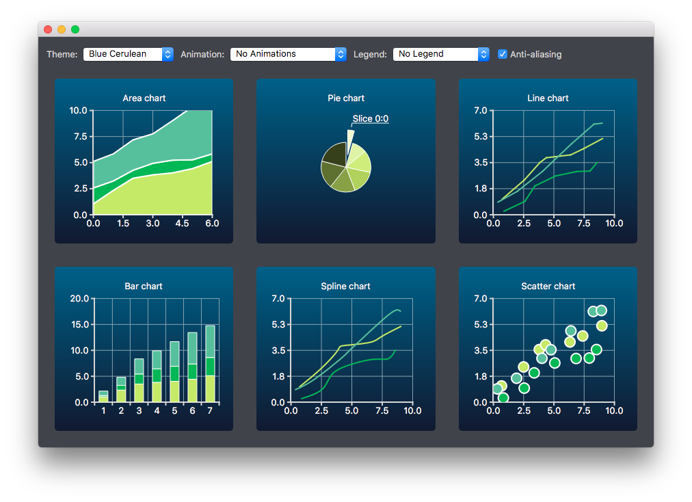

Creating Charts With Themes
Note: This is part of the Charts with Widgets Gallery example.
Here change the look and feel of the different built-in themes for some of the supported chart types.


Creating Charts
The charts of different types are generated and added to the layout separately. For example, the line chart is created as follows. The creation of other chart types is similar.
First a chart is created.
auto chart = new QChart; chart->setTitle("Line Chart");
A common set of random data is generated and placed in a list. This list is used in each chart type to add data to the series of the chart. For the line series, QLineSeries instances are created and added to the chart.
QString name("Series "); int nameIndex = 0; for (const DataList &list : m_dataTable) { auto series = new QLineSeries(chart); for (const Data &data : list) series->append(data.first); series->setName(name + QString::number(nameIndex)); nameIndex++; chart->addSeries(series); }
Default axes are created for the line series. We also specify ranges for the axes based on the range of the data used for the series.
chart->createDefaultAxes(); chart->axes(Qt::Horizontal).first()->setRange(0, m_valueMax); chart->axes(Qt::Vertical).first()->setRange(0, m_valueCount);
We also want to add more space between the labels and the y-axes. For this we specify a label format that adds space characters to the labels.
// Add space to label to add space between labels and axis auto axisY = qobject_cast<QValueAxis *>(chart->axes(Qt::Vertical).first()); Q_ASSERT(axisY); axisY->setLabelFormat("%.1f ");
Finally the line chart is added to the grid layout.
chartView = new QChartView(createLineChart(), this); m_ui->gridLayout->addWidget(chartView, 1, 2);
Changing Theme
The user can select a built-in theme to be used in the example. This theme is then applied to all charts in the layout.
auto theme = static_cast<QChart::ChartTheme>( m_ui->themeComboBox->itemData(m_ui->themeComboBox->currentIndex()).toInt()); ... chartView->chart()->setTheme(theme);
Changing Animation, Legend and Anti-Aliasing
In this example, it is also possible to see how changing animation, legend and anti-aliasing affects the appearance of the chart.
Based on the user's selection, the used animation type is set on each chart. It is possible to have no animations in the chart, or have animations for grid axis or series, or both.
QChart::AnimationOptions options( m_ui->animatedComboBox->itemData(m_ui->animatedComboBox->currentIndex()).toInt()); if (!m_charts.isEmpty() && m_charts.at(0)->chart()->animationOptions() != options) { for (QChartView *chartView : charts) chartView->chart()->setAnimationOptions(options); }
The chart can be shown with a legend. The legend can be aligned to different sides of the chart.
Qt::Alignment alignment( m_ui->legendComboBox->itemData(m_ui->legendComboBox->currentIndex()).toInt()); if (!alignment) { for (QChartView *chartView : charts) chartView->chart()->legend()->hide(); } else { for (QChartView *chartView : charts) { chartView->chart()->legend()->setAlignment(alignment); chartView->chart()->legend()->show(); } }
The user can also see how changing anti-aliasing option changes the appearance of the chart. Anti-aliasing is updated based on the user's selection.
bool checked = m_ui->antialiasCheckBox->isChecked(); for (QChartView *chart : charts) chart->setRenderHint(QPainter::Antialiasing, checked);